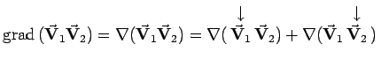

Inhalt Index DeskTop Bronstein

 Vektoranalysis und Feldtheorie Räumliche Differentialoperationen Nablaoperator, Laplace-Operator
Vektoranalysis und Feldtheorie Räumliche Differentialoperationen Nablaoperator, Laplace-Operator


| (13.66) |
| (13.67) |
addiert. Daraufhin werden die auf diese Weise erhaltenen Produkte nach den Regeln der Vektoralgebra derart umgeformt, daß nach dem Operator nur der mit dem Zeichen gekennzeichnete Faktor steht. Nach Abschluß der Rechnung wird das Zeichen weggelassen.
| Beispiel A |
|
. |
| Beispiel B |
|
. |